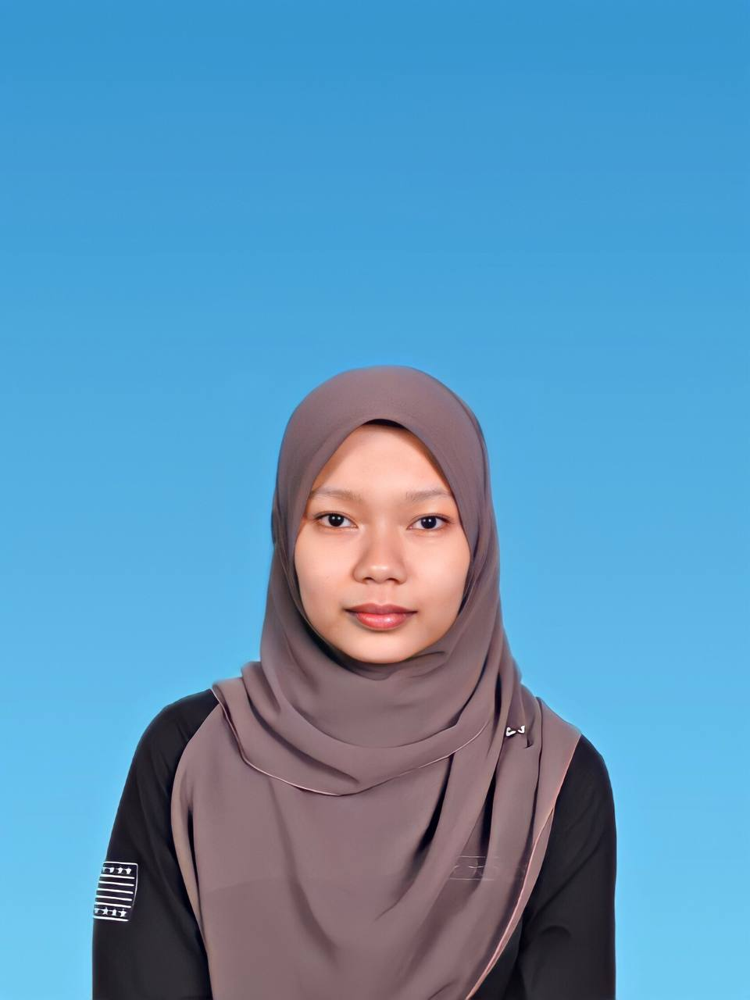

NUR AFRINA BINTI HARUN🧕
Welcome to my personal website created for the IML470 Individual Project at Universiti Teknologi MARA (UiTM). This website was developed using Notedpad, HTML, and W3Schools as part of my learning experience in web development and digital content creation. Through this project, I learned how to design web pages, organize information properly, and use multimedia elements such as images, links, and styling to make a website more attractive and interactive.
This website contains information about myself, my interests, biodata, and the course that I am currently taking. I also provided several links for visitors to learn more about my course, personal background, and other related information. Besides that, this website includes useful content and creative designs to improve the overall user experience. By completing this assignment, I gained valuable knowledge about website structure, navigation, and creativity in web design.